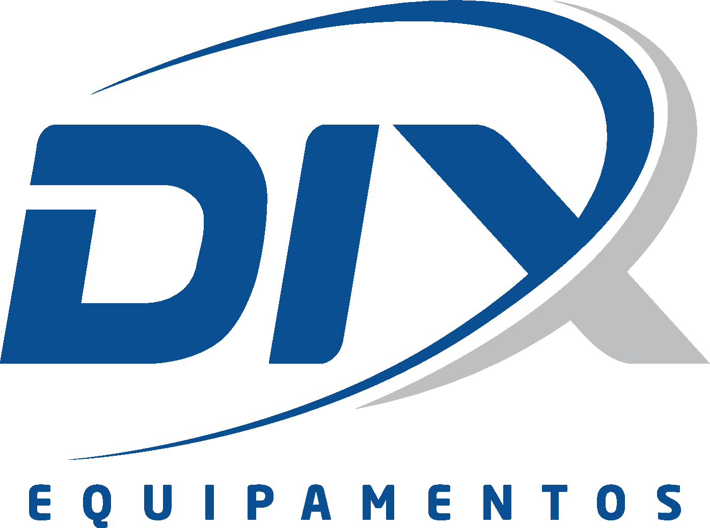

Suporte Remoto
DIX Informática
Para receber atendimento técnico remoto, baixe o aplicativo RustDesk abaixo. Não é necessário realizar uma instalação tradicional para iniciar o atendimento.
⬇ Baixar RustDesk
Windows 64 bits • RustDesk 1.4.9
Como iniciar o atendimento
1
Clique em Baixar RustDesk.
2
Abra o arquivo baixado em seu computador.
3
Se aparecer uma mensagem de segurança do Windows,
confirme que deseja executar o aplicativo.
4
Informe ao técnico da DIX Informática
o ID exibido pelo RustDesk.
Importante: mantenha o RustDesk aberto durante
o atendimento. O acesso remoto somente deve ser autorizado
quando solicitado pelo técnico.